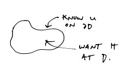

In applications of Harmonic Functions (see physics), we are faced with the problem of, given a bounded domain \(D\) and a continuous function \(u:δD\to\mathbb R\), extending \(u\) to a harmonic function on \(D\) which is continuous on \(\bar D\).
For example, given the temperature on the boundary of a slab, we want to find the temperature on the slab.
This problem is the Dirichlet Problem.
Lemma
Solutions to Dirichlet Problem are unique if they exist.
Proof:
Suppose \(u,\tilde u:\bar D\to\mathbb R\) are continuous, agree on \(δD\) and are harmonic on \(D\). Then \(u-\tilde u=0\) everywhere on \(δD\) and by Global Max/Min Principle,
on \(D\). So \(u=\tilde u\).
If \(D\) is a disk, Dirichlet Problem is solved via an explicit formulation known as Poisson’s Formula.
The idea is that if we knew \(u\), we could find a harmonic conjugate \(v\), so that \(f=u+iv\) and then
We want the RHS to only depend on \(u\), not \(v\).
Theorem (Poisson’s Formula)
If \(u_0\) is harmonic on a domain containing the closed disk \(\overline{D_R(0)}\) for \(R>0\), then \(\forall z=x+iy\in D_R(0)\):
Letting \(z=re^{iα}\), in polar coordinates this is
Proof:
Let \(v\) be the harmonic conjugate for \(u_0\) on a simply-connected set containing \(D_R(0)\). So \(f=u+iv\)
where \(γ_R\) is the CCW circle of radius \(R\)
Now consider (for fixed \(z\) with \(|z|<R\))
which is holomorphic in \(w\) on \(D_{R_1}(0)\) where \(R_1>R\), slightly.
Since \(R^2-w\bar x\neq 0\) on \(D_{R_1}(0)\) or on its boundary.
So
by Cauchy’s Theorem
So
Taking the real part of both sides yields the solution.
So,
As required.